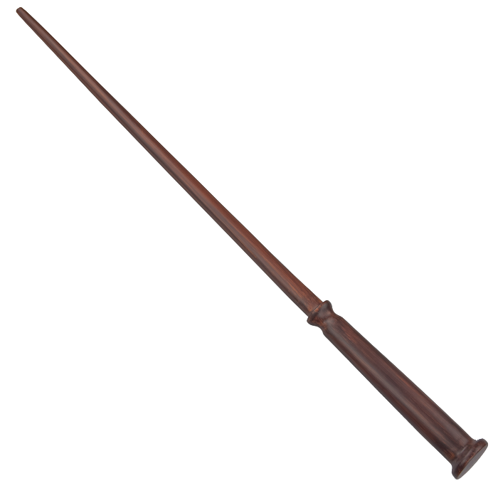

い
あ

イギリス出身の世界中を旅する魔法動物学者。魔法生物がなぜ重要で、どうして保護されるべきか、その理由について魔法界で教えたいと願っている。旅行中に、あらゆる種類のビーストたちを救い、それを不思議な空間をもつトランクの中に保管し、面倒をみながら、保護している。少し不器用で、仲間の魔法使いや魔女たちと一緒にいるよりも、魔法生物たちといるほうが気楽なアウトサイダー的存在。ホグワーツの重要な教科書のひとつ、「幻の動物とその生息地」の著者である。
A guide to help people understand we should be protecting these creatures instead of killing them.
Yes, that’s right. Rescue, nurture and protect them, and I’m gently trying to educate my fellow wizards about them.

ティナはポーペンティナの略称。賢く、意志の強い魔女である。ニューヨークに住み、MACUSA（アメリカ合衆国魔法議会）で働いている。一度は闇祓いだったが、感情に流され、無断で魔法を使い、職務を逸脱したことで、単調なデスクワーカーに降格された。捜査官としての地位に復帰したいと望むあまり、ニュート・スキャマンダーという名前の魔法使いの行く先々に現れるようになる。ルームメイトでもあるクイニーという非常に仲の良い妹がいる。

ティナの妹。活発で少し奇抜なとてもきれいな女性だが、それ以上の才能がある。MACUSAでティナと同じく単調なデスクワークをしているが、姉のように闇祓いになろうなどという野心は抱いていない。率直に言って、自由奔放な性格のクイニーは、働きたいとさえ思っていないのである。善良な心の持ち主で、姉のためならどんなことでも厭わずにやる覚悟である。さらに、彼女はレジリメンス、つまり心を読むことができる。
Newt: You’re a Legilimens?
Queenie: Uh huh, yeah. But I always have trouble with your kind. Brits. It’s the accent.

缶詰工場で働く“ノーマジ”（アメリカでのマグルの呼び方／普通の人間）。夢は、パン屋になることと新鮮でおいしいごちそうを作ること。資金を確保できず、これも運命と思ってあきらめかけたところで、ニュート・スキャマンダーと偶然に出会い、すべてが変わる。無意識のうちに、ニュートの魔法動物たちが引き起こす大騒動の中に飲み込まれていく。最初は不可思議なものを自分の想像だと思っていたが、すぐに、夢をはるかに超えたとんでもない冒険に巻き込まれていることに気付く。
That’s why I want to make pastries, you know. It makes people happy. We’re going this way.
ニュート

Revelio!
ティナ
Revelio!
クイニー
Revelio!
ニュート
濃い青緑のシングルコート
濃いオレンジ色のベスト
象牙色のシャツ
蝶ネクタイ
革のブーツ
コートの下襟の後ろにはボウトラックルが、ポケットにはスウーピング・イーグルを飼っている
ティナ
飾り気のない丸い山形の帽子
青みがかった灰色の大きなコート
コートの下に灰色のダブルジャケット
ゆったりとした白いブラウス
金のロケットのペンダント
ゆったりとしたズボン
焦げ茶色の革靴
クイニー
下襟と袖口をふんわりさせたバラ色のシルクのコート
ファッショナブルなハイヒール
ジェイコブ
クラシックなウール地のコート
淡い緑色のシャツ
水玉模様の赤いネクタイ
0px
イギリスの動物で、キラキラ光るものなら何でも好む。ニフラーは温和で愛情深いとさえ言えるが、家具その他を破壊してしまう可能性があるので、決して室内で飼育するべきでない。
Newt: Bugger - the Niffler’s gone. Of course he has, little bugger. Any chance to get his hands on somebody shiny.
Bugger - the Niffler’s gone. Of course he has, little bugger.
Any chance to get his hands on somebody shiny.
木を守る生き物で、主にイギリス西部、ドイツ西部、スカンジナビアの一部の森に生息する。小さくて、見かけは樹皮と小枝でできている。おとなしく非常に内気ではあるが、自分の棲む木に危険が迫ると襲いかかる。ワラジムシを供えると、ボウトラックルをその間なだめておくことができる。
Newt: Now come on, Pickett. Pickett. No, they’re not going to bully you... now, come on. Pickett!
All right. But that is exactly why they accuse me of favoritism...
Now come on, Pickett. Pickett.
No, they’re not going to bully you... now, come on. Pickett!
All right. But that is exactly why they accuse me of favoritism...
極東及びインドに生息する。近くもの全てに攻撃的で、とくに最高に柔らかい純銀の殻でできた卵を守るために攻撃する。
Jacob: Hey, Mr English guy! I think your egg is hatching.
Hey, Mr English guy! I think your egg is hatching.
極東地域で見られるがそうやすやすとは見ることができない。脅されると姿を消し見えなくなるからだ。デミガイズの毛皮は、織れば透明マントになるので珍重されている。
Newt: Its slight operates on probability , so it can foresee the most likely immediate future.
Its slight operates on probability ,
so it can foresee the most likely immediate future.
アメリカのアリゾナ原産。フェニックスにとても似ている。飛ぶと嵐を巻き起こし、危険を察知することができる。
Newt: You see, he’s the real reason I came to America. To bring Frank home. To the wilds of Arizona.
You see, he’s the real reason I came to America.
To bring Frank home. To the wilds of Arizona.
爬虫類と蝶の間のような青と緑の羽根をもつ生物。飛んでいない時は緑色の棘の繭の中に籠っている。スウーピングイーヴルが持っている毒をうまく薄めると悪い記憶を消す効能がある。
Newt: Well this - the locals call ‘Swooping Evil’ - not the friendliest of names. It’s quite an agile fellow.
Well this - the locals call ‘Swooping Evil’
- not the friendliest of names.
It’s quite an agile fellow.
ねずみのような生物でイギリスの海岸地域に生息する。背中にイソギンチャクに似たものを生やし、この生えているものをピクルスにして食せば、呪いやジンクスに対する抵抗力を増強させるが、食べ過ぎると耳からみっともない紫色の毛が生えてくる。
Newt: Well, the first symptom would be flames out of his anus — It’ll last forty-eight hours at most!
Well, the first symptom would be flames out of his anus
— It’ll last forty-eight hours at most!
強大な力を持つ大型で灰色のアフリカ産の動物。厚く硬い皮膚は大方の呪文も呪いも撥ねつける。エルンペントのツノは皮膚から金属までありとあらゆるものを貫くことができるし、致死的な毒液を持っており、その液を注入されたものはすべて破裂してしまう。
Newt: So where would you say that a medium-sized creature that like broad, open plains - trees - water holes - that kind of thing - where might she go?
So where would you say that a medium-sized creature that like broad,
open plains - trees - water holes - that kind of thing
- where might she go?
極めて内気な生き物で、満月の時だけ隠れ穴から出てくる。世界中に生息しており、月明かりにムーンカーフのダンスを見るのはうっとりするような経験である。
Jacob: There you go, cutie. Ah, there it is.
There you go, cutie. Ah, there it is.
オーストラリア原産の昆虫。1.5cmほどの長さで鮮やかなサファイアブルーだが、猛スピードなのでマグルが気付くことはほとんどないし、魔法使いでさえ刺されるまで気がつかないことがある。
Tina: What was that?
Newt: Er - moth, I think. Big moth.
What was that?
Er - moth, I think. Big moth.
ヨーロッパの山岳地帯に生息する。極めて攻撃的な性格。グラップホーンの皮はドラゴンよりも強靭でほとんどの呪文を跳ね返す。
Newt: So they’re the last breeding pair in existence. If I hadn’t managed to rescue them, that could have been the end of Graphorns - for ever.
So they’re the last breeding pair in existence.
If I hadn’t managed to rescue them, that could have been the end of Graphorns - for ever.
お
Alohomora
鍵のかかった扉を開ける呪文
Alohomora. We watch the locks and cogs of the vault door turn.
Petrificus Totalus
全身を石のように硬直させる呪文
Petrificus Totalus. Bingley suddenly stiffens and falls back flat on the ground.
Obliviate
記憶を消し去る呪文
You wiped his memory, right? The No-Maj with the case?
Finestra
Finestra. The window glass shatters and Newt leaps inside.
Accio
離れたところにある物を自分の手元に呼び寄せる呪文
ACCIO! IN SLOW MOTION the Niffler sails backwards through the air towards Newt.
Lumos
杖先に小さな灯りをともす呪文
Apparition Disapparition
Newt quickly seizes Jacob and the two of them, plus the Niffler and case, Disapparate.
お勧めのシーン
Mary Lou: You,friend! What drew you to our meeting today?
Newt: Oh...I was just...passing...
Mary Lou: Are you a seeker after truth?
Newt: I’m more of a chaser, really.
メアリールーは真実を追う者なのか、と聞いたが、ニュートは勘違いをしてクイディッチの役職、シーカーと答えている
Queenie: Of course - Ilvermorny! It’s only the best wizard school in the whole world!
Newt: I think you’ll find the best wizarding school in the world is Hogwarts!
Queenie: HOGWASH.
ニュートがホグワーツが最高の学校と言ったことに対してクイニーが冗談でしょう？(Hogwash)と返している